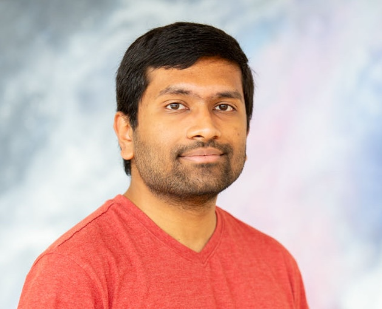
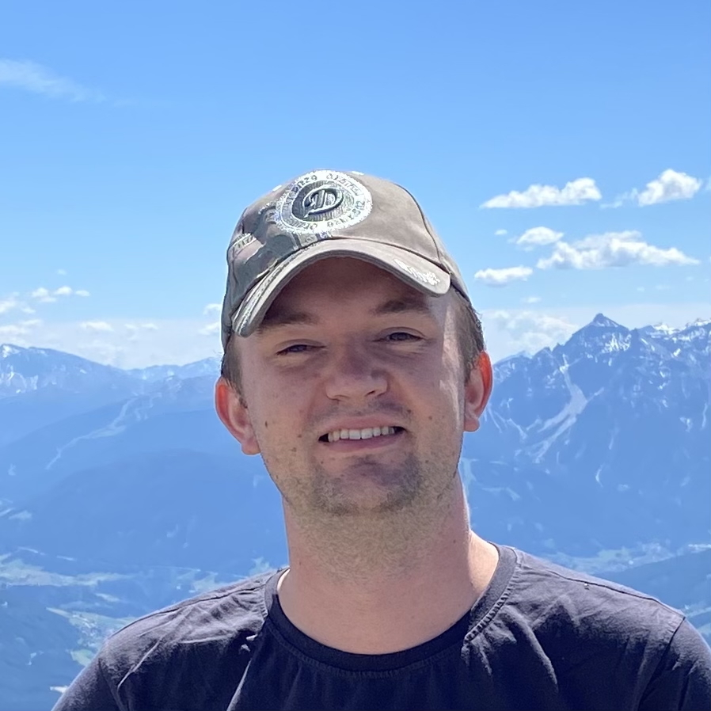
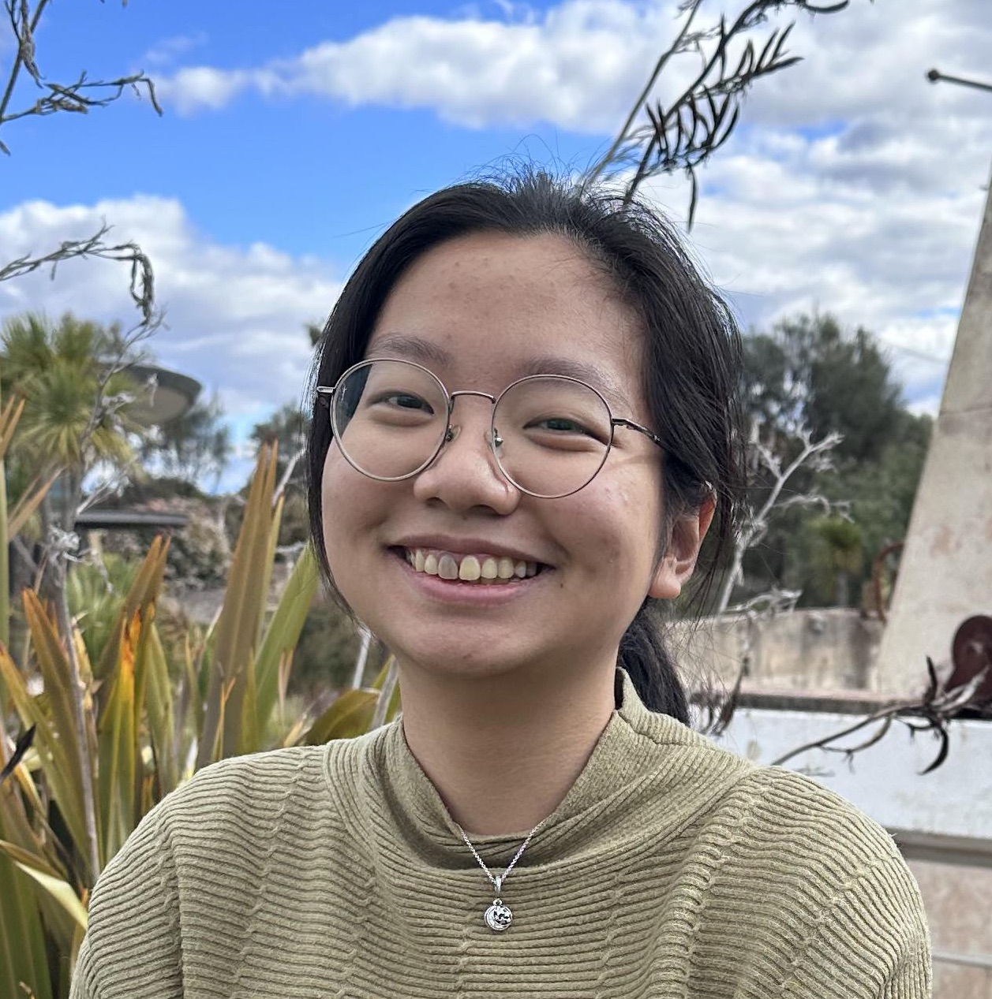

Connecting Observations and Simulations
Learn how to use both astronomical observations and computational simulations together to enhance your research, with a focus on practical strategies for integrating both in your science cases.
Harley Wood School of Astronomy 2026
In conjunction with the Annual Scientific Meeting, the ASA sponsors the Harley Wood School of Astronomy for postgraduate students each year. The School is named in memory of Dr Harley Wood, first President of the ASA.
Application deadline: 27 May 2026
The School will feature 2 days of lectures and hands-on sessions, with the remaining time dedicated to networking activities. The registration fee includes 3 nights of acommodation, transport to and from the venue, and all meals. This year, we are focusing on the topic of linking observations and simulations, with particular emphasis on the role of high-performance computing, big data, and machine learning in this process.
Learn how to use both astronomical observations and computational simulations together to enhance your research, with a focus on practical strategies for integrating both in your science cases.
The school will cover advanced techniques used in today’s research, including high-performance computing, big data analysis, and machine learning.
We will explore upcoming astronomical facilities and surveys, and learn how to consider future developments when planning your research.
We will publish the full program soon!
Detailed times are indicative; the final program will be published before the school.
The 2026 lecturer list will be announced closer to the school. Stay tuned!
Research School of Astronomy and Astrophysics, ANU
Research School of Astronomy and Astrophysics, ANU
International Centre for Radio Astronomy Research at University of Western Australia
Centre for Astrophysics and Supercomputing at Swinburne University of Technology
Research School of Astronomy and Astrophysics, ANU
CSIRO
Research School of Astronomy and Astrophysics, ANU
University of Sydney
The 2026 Harley Wood School of Astronomy will be held at the ANU Kioloa Coastal Campus, about 2.5 hour car drive from Canberra. Information about transportation options to the venue will be provided soon.
The registration form will open on 20 March 2026 and will close on 27 May 2026.
Applications open: 20 March 2026
Applications close: 27 May 2026
Have questions? Contact the organisers.
Questions about eligibility, accessibility, or logistics? We’re happy to help.
Email: HarleyWood2026@gmail.com
Organising committee:
LOC Chair
ANU
LOC Chair
ANU

ANU
ANU

ANU
ANU

ANU

ANU